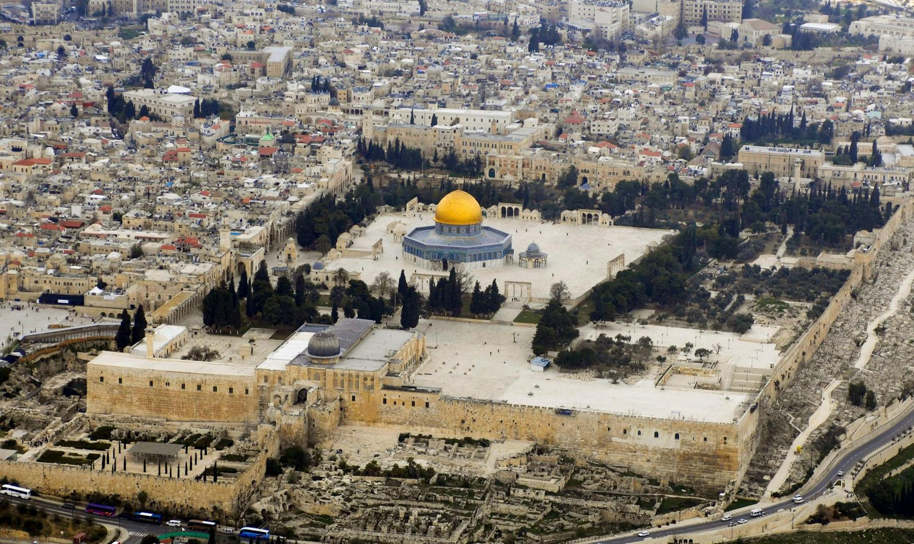
מתוך מצגת ירושלים של המגמהחבל ירושלים · נושא 1
ירושלים: פתיחה
העיר החשובה ביותר לתיירות בישראל: על רכס הרים בגובה 800 מטר, בין השפלה למדבר, וקדושה לשלוש דתות. כמעט שלושה מכל ארבעה תיירים שמגיעים לישראל מגיעים גם אליה. בנושא הזה נבין למה.
תעודת זהות
ירושלים במספרים
ירושלים היא בירת ישראל והעיר הגדולה בה. היא מוקד לכל מגזרי התיירות: צליינות, היסטוריה וארכיאולוגיה, תרבות, זיכרון והנצחה, ותיירות עירונית.
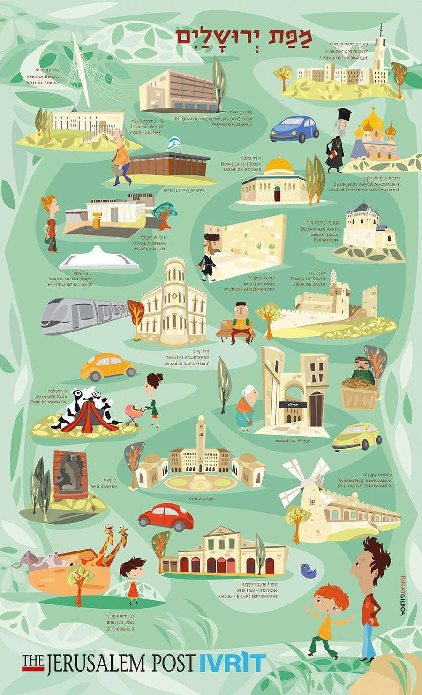
הרחבה
בין שמותיה של העיר: ציון, שלם, יבוס, עיר דוד, יפה נוף ואריאל. ריבוי השמות משקף את מקומה המרכזי בתרבות היהודית, ובשירה העברית נכתבו עליה מאות שירים, כמו "ירושלים של זהב" של נעמי שמר.
החומה של העיר העתיקה נבנתה בידי הסולטן העות'מאני סולימאן המפואר לפני כ־500 שנה. אחד השערים, שער הרחמים, אטום, ולפי המסורת ייפתח בבוא המשיח.
נתון 74%: דוח מבקר המדינה על ירושלים (2019), לפי נתוני 2017. ההכרזה של אונסק״ו אינה מופיעה בספר.
מיקום
גבולות החבל
חבל ירושלים הוא אזור הררי: הרי יהודה, ובמרכזם הרי ירושלים, שגובהם מגיע לכ־800 מטר.
הרחבה
ירושלים נמצאת כ־60 ק״מ מהים התיכון. הקרבה למקומות שונים מאוד, ההר, השפלה והמדבר, הופכת אותה לבסיס לינה לטיולים בכל האזור.
המפה: קו החוף לפי נתוני Natural Earth. היישובים במיקומם האמיתי. רצועות הנוף משורטטות בקירוב.
למה דווקא כאן
עיר על רכס ההר
מדבר בצל גשם. ענני הגשם מגיעים מהים התיכון ומורידים את רוב הגשם על המדרון המערבי של ההר. כשהאוויר יורד מזרחה הוא מתחמם ומתייבש, ולכן ממש ממזרח לעיר מתחיל מדבר יהודה.
מה זה נותן לתיירות? מתצפיות בעיר רואים את המדבר, ותוך דקות נסיעה עוברים מנוף ירוק לנוף מדברי.
למה העיר קמה כאן? על רכס ההר עוברת הדרך הקדומה מצפון לדרום, ומכאן יורדות דרכים מערבה לים ומזרחה ליריחו. ליד העיר הקדומה נבע מעיין הגיחון, וההר הגבוה היה קל להגנה.
הגבהים והמרחקים מקורבים. החתך סכמטי.
הרחבה
ירושלים יושבת על קו פרשת המים: מי גשם שיורדים ממערב לעיר זורמים אל הים התיכון, ומה שיורד ממזרח לה זורם מזרחה, אל הבקע. לאורך הרכס עובר היום כביש 60, שמכונה "דרך האבות", כי לפי המסורת הלכו בו אבות האומה. לאורכו נמצאות חברון, בית לחם וירושלים.הרחבה, לא מהספר
בירושלים יורדים בממוצע כ־550 מ״מ גשם בשנה, ובמרחק קצר ממזרח לה הכמות יורדת בחדות.הרחבה, לא מהספר
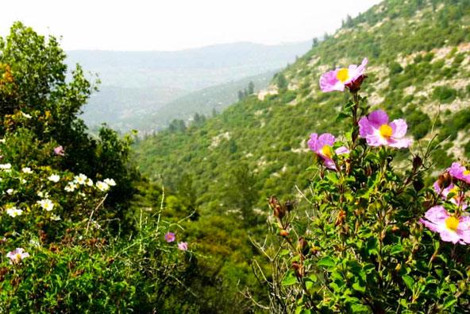
נוף
הרי יהודה
- סלע: בעיקר גיר ודולומיט.
- צמחייה: בעבר כיסו את ההרים חורשים. היום יש חורש טבעי בעיקר בהרי ירושלים.
- שמורות טבע: שטחים בהרי ירושלים הוכרזו כשמורות.
- טיולים: מסלולי הליכה ואופניים, מעיינות ותצפיות, במרחק קצר מהעיר.
הרחבה
אבן ירושלים. הגיר הוא גם אבן הבנייה של העיר. ב־1918 קבע המושל הבריטי רונלד סטורס שכל בניין בירושלים יצופה באבן. לכן העיר כולה בגוון אחד, וזה חלק מהזהות שלה כיעד תיירותי.הרחבה, לא מהספר
טרסות ומעיינות. במדרונות ההרים בנו החקלאים לאורך הדורות טרסות, מדרגות חקלאיות, ובין ההרים נובעים מעיינות. שניהם הפכו למוקדי טיול פופולריים בהרי ירושלים.הרחבה, לא מהספר
שמורת טבע: חבל ארץ מוגן שהוכרז כדי לשמור על החי והצומח שבו.
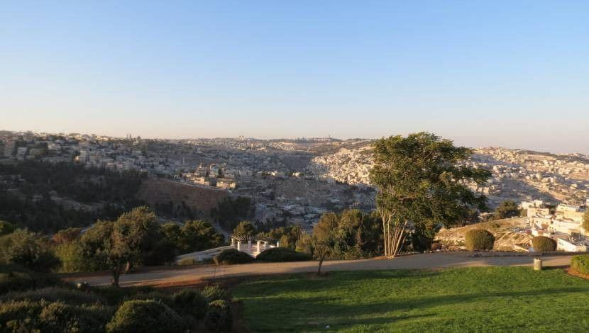
אקלים ועונות
קרירה בחורף, יבשה בקיץ
| עונה | מזג האוויר | מה זה אומר לתייר |
|---|---|---|
| חורף | קר וגשום, לפעמים שלג | שלג בעיר מושך מבקרים מכל הארץ. חג המולד מביא צליינים לבית לחם. |
| אביב וסתיו | נעים | העונות הנוחות לסיור רגלי. פסח, חג הפסחא וסוכות הם עונות השיא. |
| קיץ | חם ויבש, ערבים קרירים | סיורים בבוקר ובערב, פסטיבלים ומופעים בערבי הקיץ. |
האקלים אינו מופיע בספר הלימוד. השקף הוא הרחבה.

עצירה לתרגול · עונים בסטודיו
תרגול: שאלות 1–3
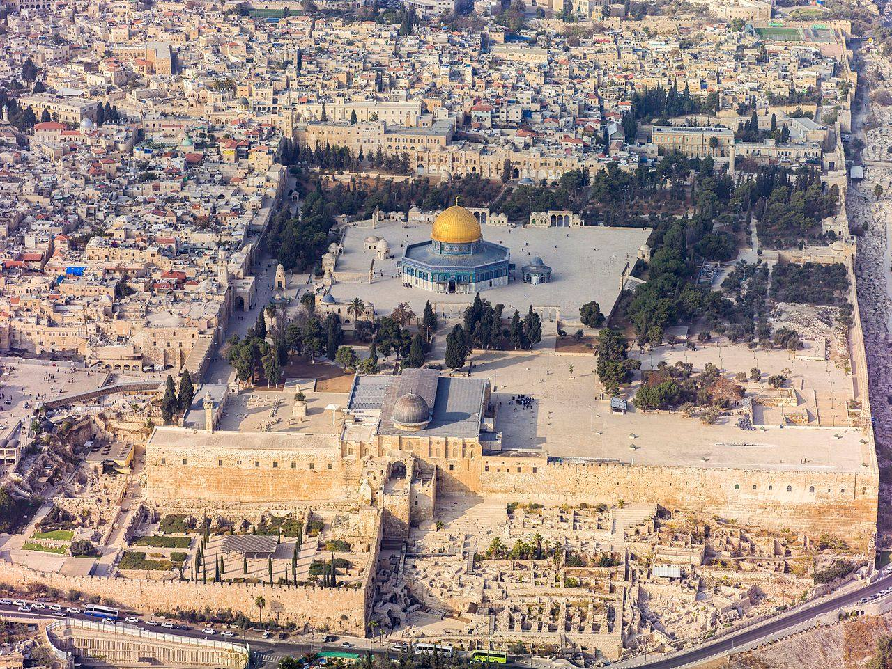
מתוך מצגת ירושלים של המגמהלמה מגיעים
הר אחד, שלוש דתות
ירושלים קדושה ליהדות, לנצרות ולאסלאם, ולכל אחת מהן היא מקום שאין לו תחליף. בשלושת השקפים הבאים נכיר מה קדוש לכל דת, ומה עושה בעיר הצליין של כל אחת מהן.
שלוש הדתות · יהדות
העיר שאליה מתפללים
על הר הבית, הר המוריה, עמדו בית המקדש הראשון והשני. לפי המסורת שם התרחשה עקידת יצחק, ושם נכרתה הברית בין אלוהים לאברהם. יהודים בכל העולם מתפללים לכיוון ירושלים.
- הכותל המערבי: קיר התמך שבנה הורדוס סביב הר הבית בימי בית שני, השריד הקרוב ביותר למקדש. לפי המסורת "לעולם אין השכינה זזה מן הכותל המערבי", ולכן זהו המקום המקודש ביותר ליהודים.
- הר הזיתים: בית הקברות היהודי העתיק. לפי המסורת, הקבורים בו יהיו הראשונים לתחיית המתים.
- קבר דוד: לפי המסורת, במערה בהר ציון.
- עיר דוד: ירושלים הקדומה, שדוד המלך כבש והפך לבירתו.
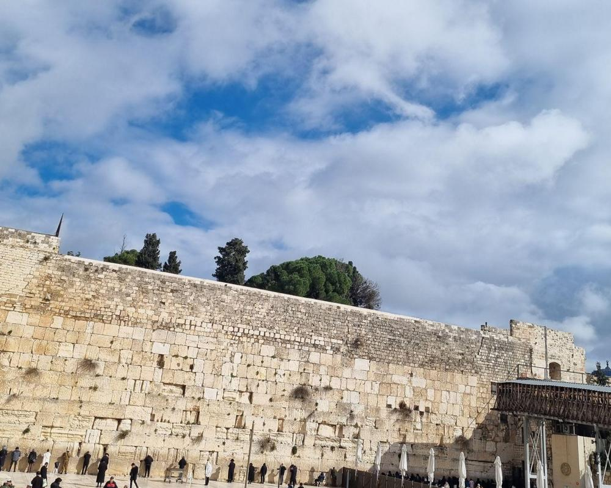
מה עושה כאן התייר היהודי
תפילה בכותל, טקסי בר מצווה ובת מצווה, ברכת כוהנים המונית בכותל בחול המועד פסח וסוכות, וביקור באתרים שמספרים את ההיסטוריה היהודית: הרובע היהודי, מנהרות הכותל ועיר דוד.
בבגרות 2019 התבקשו התלמידים לתכנן סיור יומיים למשפחה יהודית מחו״ל שבאה לחגוג בר מצווה בכותל. נחזור לשאלה הזו בסוף הנושא.
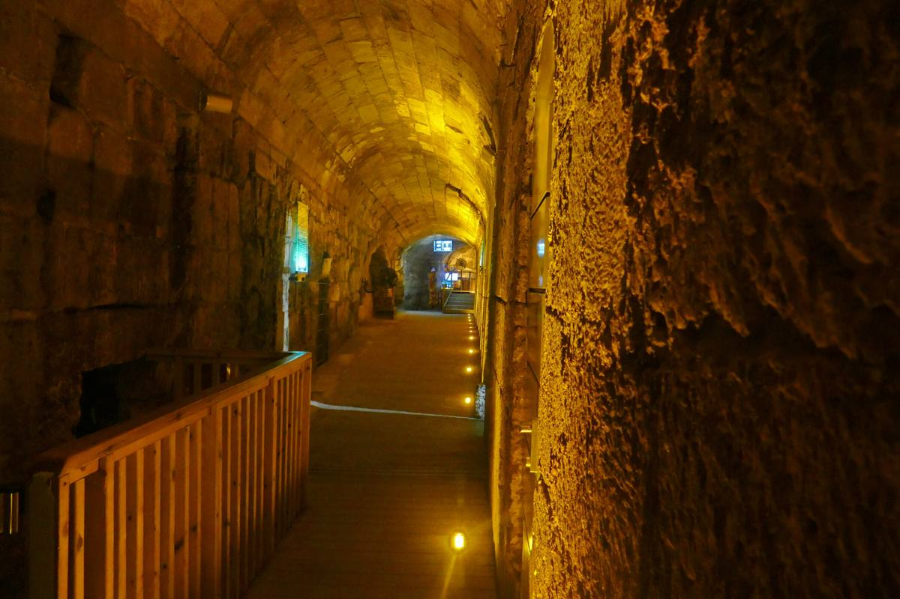
מנהרות הכותל
המשך הכותל מתחת לבתי הרובע המוסלמי.
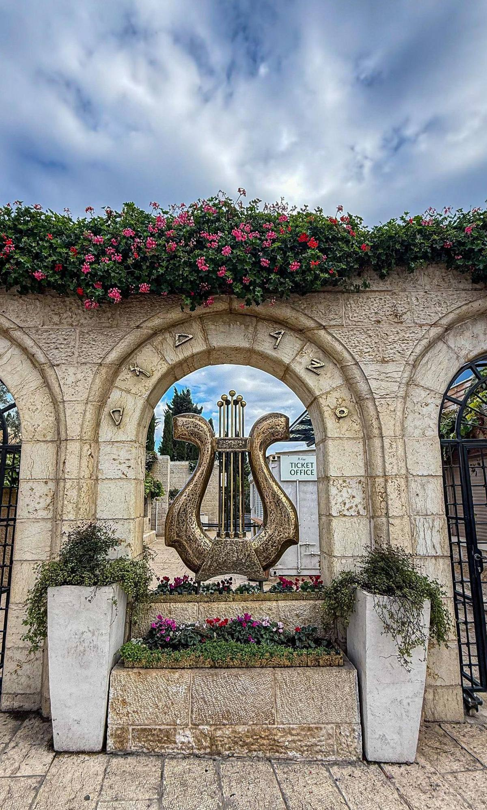
עיר דוד
ירושלים הקדומה ונקבת חזקיהו.
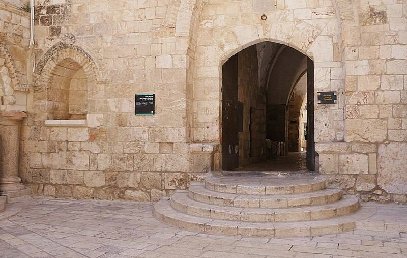
קבר דוד
לפי המסורת, בהר ציון.
התמונות: מצגת התמונות הרשמית.
שלוש הדתות · נצרות
העיר של ימיו האחרונים של ישו
לפי האמונה הנוצרית, בירושלים אכל ישו את הסעודה האחרונה, נעצר, נשפט, נצלב, נקבר, קם לתחייה ועלה לשמיים. לכן כמעט כל אתר נוצרי בעיר מסמן אחד מהאירועים האלה.
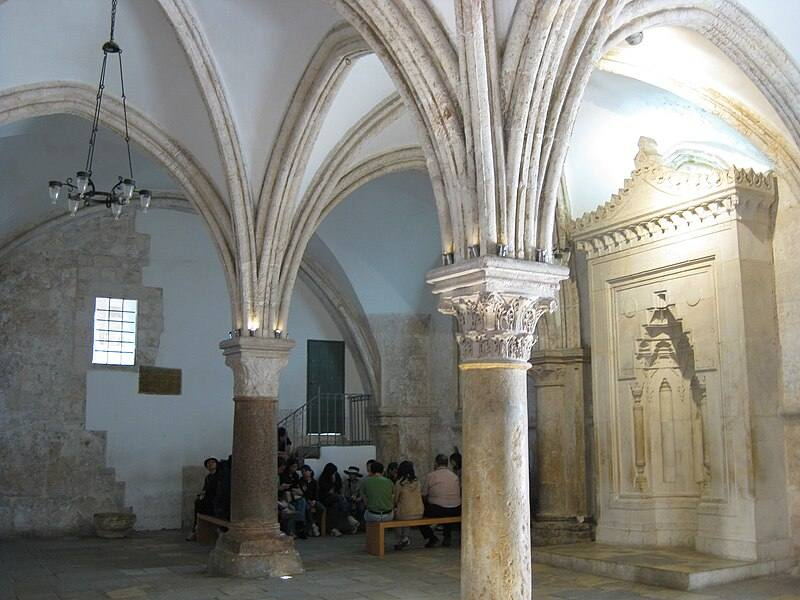
הר ציוןחדר הסעודה האחרונה
ישו ושליחיו אכלו כאן את סעודת הפסח.
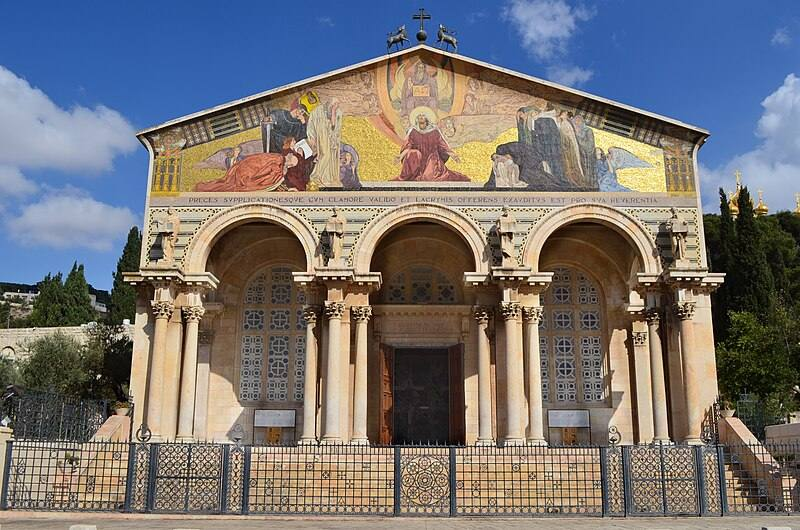
הר הזיתיםגת שמנים
כנסיית כל האומות, בגן שבו התפלל ישו לפני מעצרו.
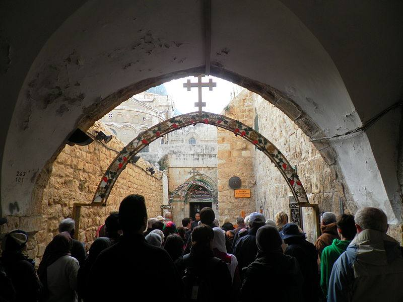
הרובע הנוצריהוויה דולורוזה
14 תחנות בדרך לצליבה. חמש האחרונות בתוך כנסיית הקבר.
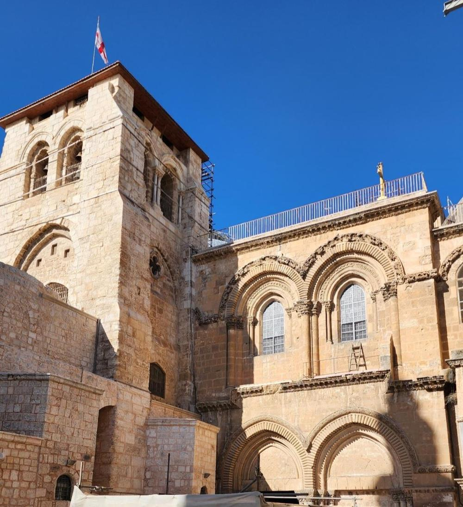
הרובע הנוצריכנסיית הקבר
מקום הצליבה, הקבורה והתחייה. שיא הביקור של הצליין.
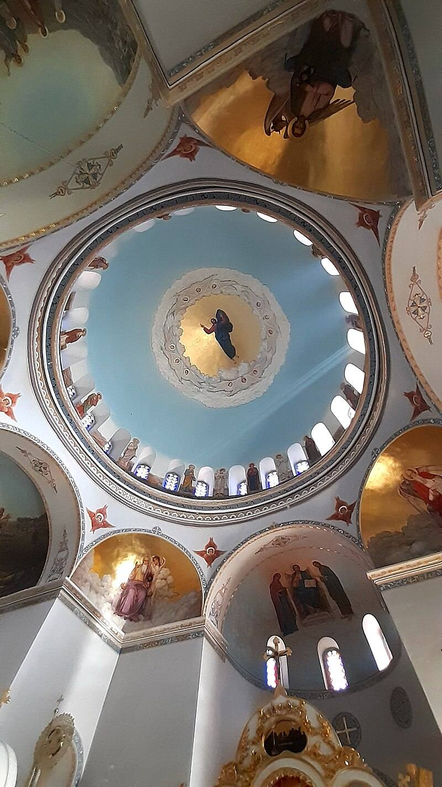
הר הזיתיםכנסיית העלייה
המקום שממנו עלה ישו לשמיים.
התמונות: מצגת התמונות הרשמית (פיקיוויקי, אתרי מורשת ויקיפדיה).
שלוש הדתות · זרמי הנצרות
לכל זרם, האתרים שלו
| זרם | מי הם | מה חשוב להם בירושלים |
|---|---|---|
| קתולים | בהנהגת האפיפיור ברומא | הוויה דולורוזה, כנסיית הקבר, הכנסיות בהר הזיתים. הפרנציסקנים שומרים על המקומות הקדושים מטעם הכנסייה. |
| אורתודוקסים | הנצרות המזרחית: יוונים, רוסים ועוד | כנסיית הקבר וטקס "האש הקדושה" בשבת שלפני הפסחא. כנסיית מריה מגדלנה הרוסית. |
| פרוטסטנטים | זרמי הרפורמציה, מדגישים את לימוד הכתובים | גן הקבר, מחוץ לחומות. אתרים פשוטים, בלי פולחן מסביב. |
| ארמנים | העם הראשון שקיבל את הנצרות כדת רשמית | הרובע הארמני וקתדרלת סנט ג'יימס. |
| אתיופים | הכנסייה האתיופית | מנזר על גג כנסיית הקבר. |
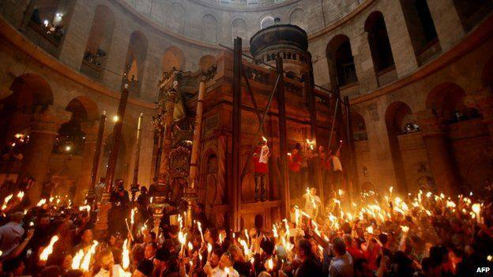
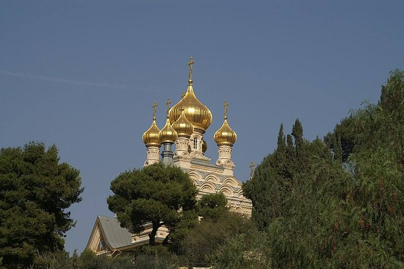
הרחבה
כנסיית הקבר מחולקת בין כמה כנסיות: היוונים האורתודוקסים, הקתולים והארמנים מחזיקים את רוב השטח, ולקופטים, לאתיופים ולסורים יש חלקים קטנים. החלוקה נשמרת בהסדר ישן שנקרא "הסטטוס קוו". מפתח הכנסייה מוחזק בידי משפחה מוסלמית, כדי שאף כנסייה לא תשלוט בדלת.הרחבה, לא מהספר
את חג המולד חוגגים הקתולים ב־25 בדצמבר, והאורתודוקסים בתחילת ינואר. לכן עונת הצליינות לבית לחם נמשכת כמה שבועות.הרחבה, לא מהספר
שאלה שחוזרת בבגרות
איפה נקבר ישו? שתי תשובות
כנסיית הקבר
בתוך העיר העתיקה, ברובע הנוצרי. כאן, לפי רוב המסורות הנוצריות, הייתה גבעת הגולגולתא שעליה נצלב ישו, וכאן נקבר וקם לתחייה.
מאמינים בה: קתולים ואורתודוקסים, וכמעט כל הזרמים הוותיקים.
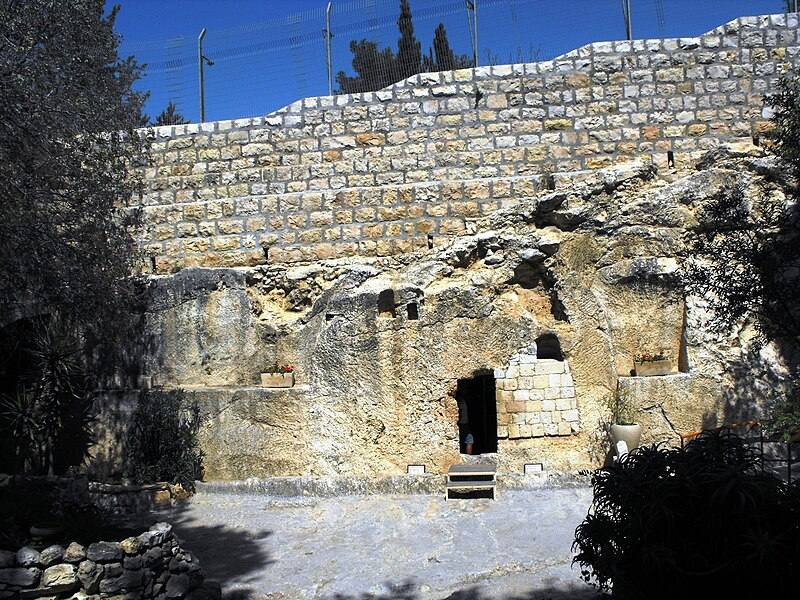
גן הקבר
מחוץ לחומות, צפונית לשער שכם. מערת קבורה עתיקה בגן שקט, ליד סלע שצורתו מזכירה גולגולת. זוהה כקבר ישו במאה ה־19.
מאמינים בו: חלק מהפרוטסטנטים.
בבגרות 2023 נשאלו התלמידים: "ציינו את שני האתרים שנחשבים מקום קבורתו של ישו, ואיזה זרם מאמין בכל אחד".
שלוש הדתות · אסלאם
"המסגד הרחוק ביותר"
לפי האמונה המוסלמית, מוחמד נישא בלילה אחד ממכה לירושלים, ומהר הבית עלה לשמיים, ושם קיבל את מצוות התפילה. לכן הר הבית, בערבית "אל־חרם א־שריף", הוא המקום השלישי בקדושתו לאסלאם, אחרי מכה ומדינה.
- מסגד אל־אקצא: הוקם לראשונה בשנת 705 לספירה. שמו פירושו "הרחוק ביותר", על שם מסע הלילה של מוחמד. הקדום והחשוב במסגדי הארץ.
- כיפת הסלע: נבנתה בסוף המאה ה־7 מעל הסלע שממנו, לפי האמונה, עלה מוחמד לשמיים. אותו סלע, לפי המסורת היהודית, הוא אבן השתייה.
זיארה: ביקור מוסלמי במקום קדוש או בקבר, כמו ביקור בהר הבית או במערת המכפלה.
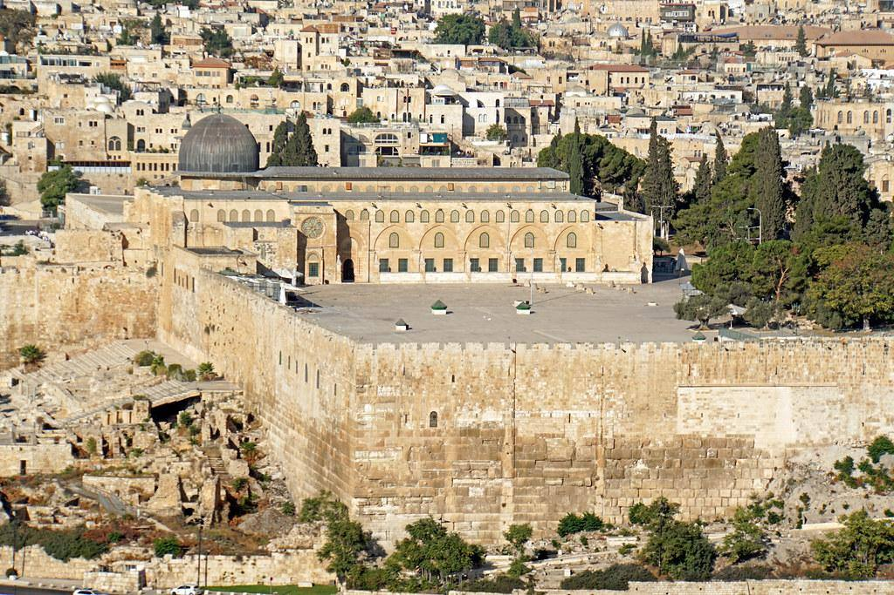
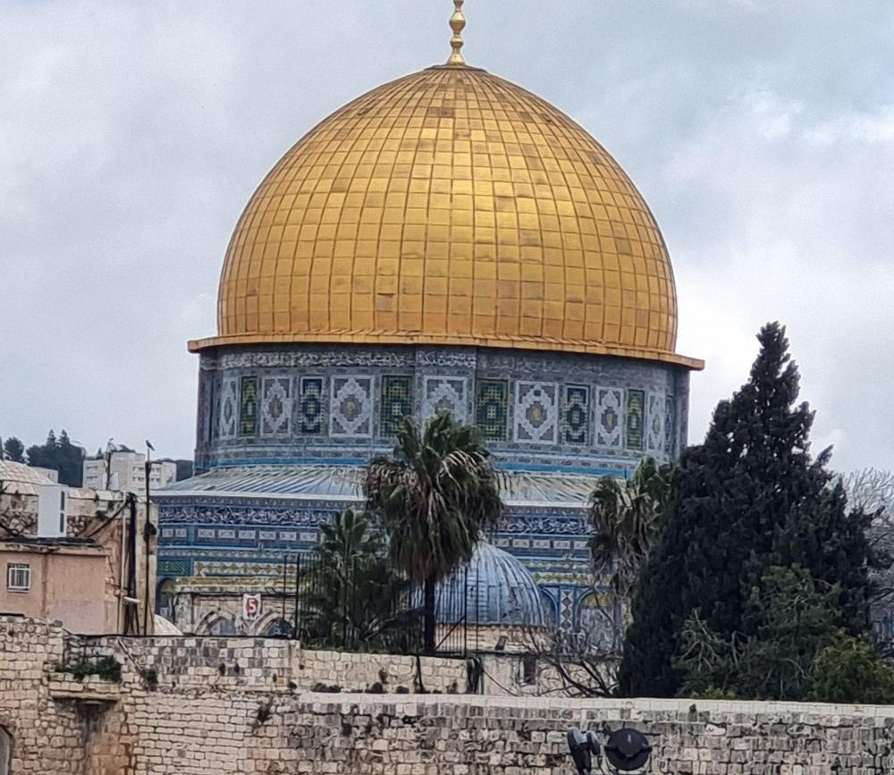
הרחבה
בימי שישי, ובמיוחד בחודש הרמדאן, מגיעים להר הבית מתפללים רבים מאוד. הכניסה לכיפת הסלע מותרת רק למוסלמים. יהודים ותיירים מבקרים ברחבה בשעות קבועות, ותפילה של יהודים במקום אסורה.
הר הבית הוא אתר רגיש מאוד מבחינה דתית ופוליטית, ואירועים בו משפיעים על התיירות לכל העיר.
סביבות ירושלים
ערים של עלייה לרגל
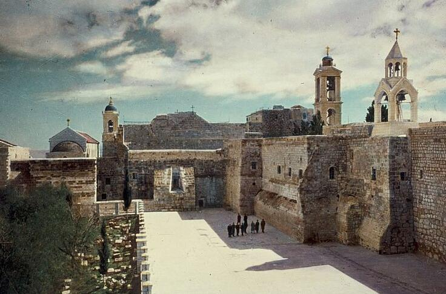
בית לחם · נצרותכנסיית המולד
נבנתה מעל המערה שבה, לפי המסורת, נולד ישו. מהכנסיות העתיקות בעולם, ואתר מורשת עולמית. בחג המולד העיר מתמלאת צליינים.
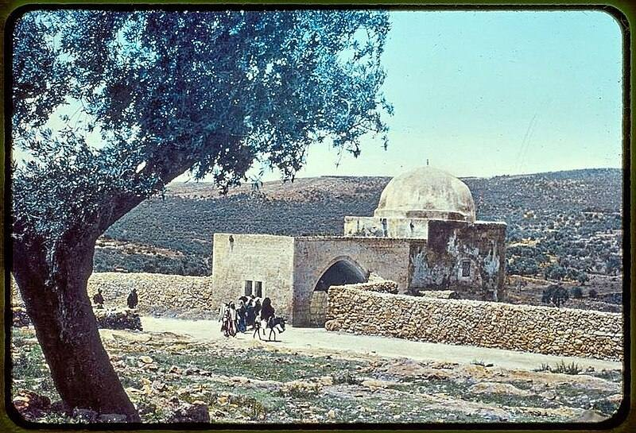
כניסה לבית לחם · יהדותקבר רחל
קבר רחל אמנו. מקום תפילה, בעיקר לנשים, שמגיעות לבקש על פריון ועל ילדיהן.
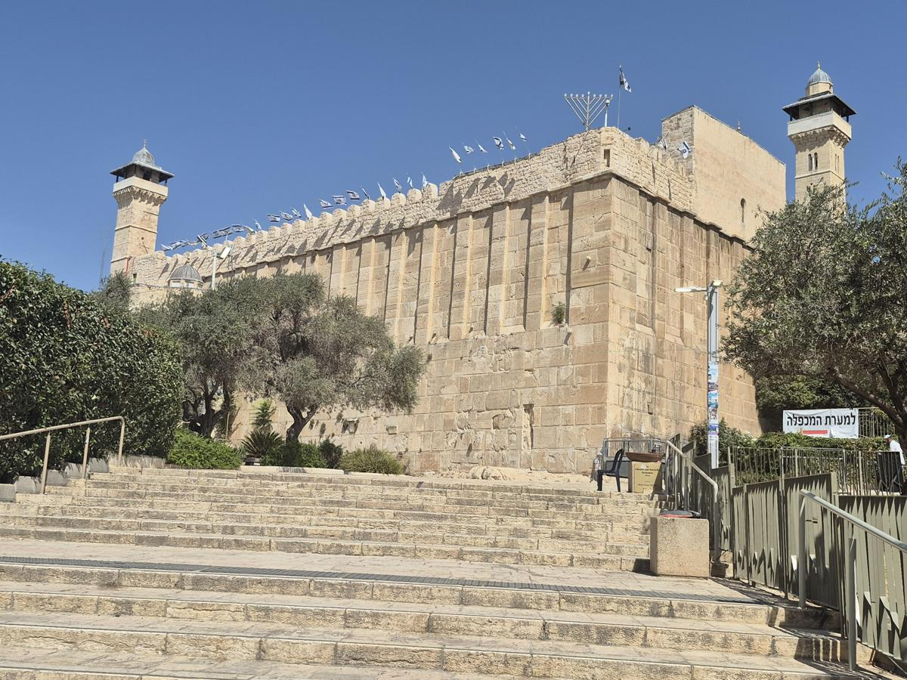
חברון · יהדות ואסלאםמערת המכפלה
קברי אברהם, יצחק ויעקב, שרה, רבקה ולאה. קדושה ליהודים ולמוסלמים, ולכן מחולקת ביניהם.
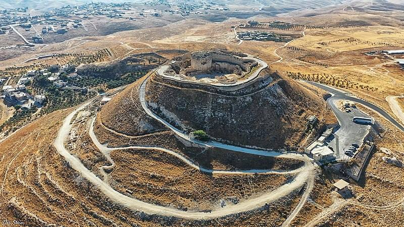
ליד בית לחם · היסטוריההרודיון
הר שבנה הורדוס, ועליו ארמון ומבצר. שם, לפי המחקר, גם נקבר.
מטרופולין ירושלים
מטרופולין: עיר אם שסביבה יישובים שמקבלים ממנה שירותי חינוך, תעסוקה, תרבות ובריאות.
מטרופולין ירושלים כולל פרברים כמו מעלה אדומים, מבשרת ציון ובית שמש, וגם מושבים וקיבוצים. בחלק מהקיבוצים בהרי ירושלים יש בתי מלון ואירוח כפרי. בית לחם וחברון נמצאות בשטחי הרשות הפלסטינית, ותיירים מגיעים גם אליהן.
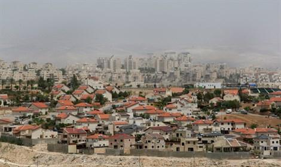
אבו גוש: יישוב אחד, כמה דתות
הכפר המוסלמי אבו גוש, מערבית לירושלים על הדרך ההיסטורית מיפו, הוא דוגמה ליישוב שבו אתרים הקדושים לכמה דתות: כנסיית תחיית המתים הצלבנית מהמאה ה־12, וכנסיית נוטרדאם על הגבעה שבה עמד ארון הברית בקריית יערים, לפי התנ״ך. בכפר גם מסעדות חומוס מפורסמות ופסטיבל מוזיקה קולית.
בבגרות 2024 התבקשו התלמידים לציין "יישוב בסביבת ירושלים שיש בו אתר הקדוש לכמה דתות". במחוון הרשמי: חברון ומערת המכפלה. גם אבו גוש היא דוגמה טובה.
התמונות: מצגת התמונות הרשמית. המכפלה: צילמה רוית שטינברג.
עצירה לתרגול · עונים בסטודיו
תרגול: שאלות 4–6
נתוני תיירות
מהתיירים שנכנסו לישראל ב־2017 ביקרו בירושלים
כ־2.7 מיליון מתוך כ־3.6 מיליון. בקרב התיירים הנוצרים השיעור הגבוה ביותר.
האתרים שבהם ביקרו התיירים בירושלים
שיעור מכלל התיירים לישראל, 2016
גם תייר יהודי מבקר בכנסיית הקבר, וגם תייר נוצרי מבקר בכותל. האתרים הגדולים מושכים כמעט את כולם.
מקור: דוח מבקר המדינה על ירושלים (2019), פרק התיירות.
סוגי תיירות
כל מגזרי התיירות בעיר אחת
| סוג תיירות | דוגמאות בירושלים ובסביבתה |
|---|---|
| צליינות יהודית | הכותל, קבר דוד, מערת המכפלה, קבר רחל |
| צליינות נוצרית | כנסיית הקבר, הוויה דולורוזה, גת שמנים, עין כרם, בית לחם |
| צליינות מוסלמית | הר הבית: מסגד אל־אקצא וכיפת הסלע |
| היסטוריה וארכיאולוגיה | עיר דוד, מנהרות הכותל, הקרדו, הבית השרוף, הרודיון |
| תרבות ומורשת | מוזיאון ישראל, מוזיאון ארצות המקרא, בית עגנון, שכונות כמו מאה שערים וימין משה |
| עירונית ופנאי | שוק מחנה יהודה, מדרחוב בן יהודה, נחלת שבעה, המושבה הגרמנית, מתחם התחנה הראשונה |
| זיכרון והנצחה | יד ושם, הר הרצל, גבעת התחמושת |
| טבע ונוף | הר הזיתים, הר הצופים, טיילת ארמון הנציב, יד קנדי, שמורות בהרי ירושלים |
תיור מול סיור עומק
תיור (מושג 77): היכרות כללית ורחבה עם יעד, כמו סיור של יום אחד בכל האתרים המפורסמים של העיר.
סיור עומק (מושג 10): היכרות מעמיקה עם נושא אחד או אזור אחד, כמו סיור של יום שלם רק בעיר דוד ובמנהרות, או רק בכנסיות הר הזיתים. תיירים חוזרים לירושלים בוחרים בדרך כלל בסיורי עומק.
הטבלה לפי ספר הלימוד, תיירות בישראל, פרק ד׳.
בירה
מוסדות המדינה כאתרי ביקור
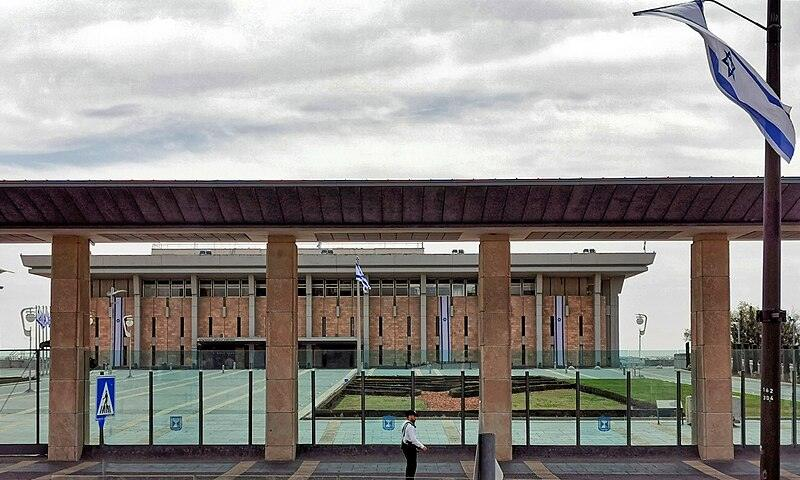
גבעת רם · 1966הכנסת
בית המחוקקים. מבקרים בתיאום מראש, בימי ראשון וחמישי, ורואים גם יצירות של שאגאל.
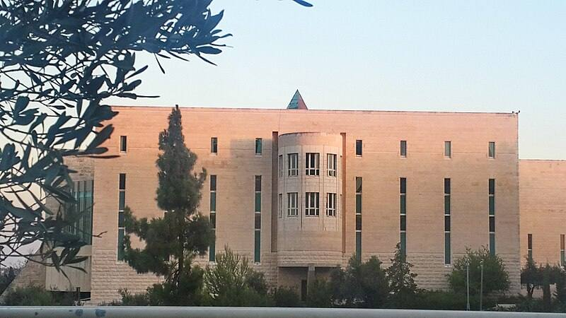
גבעת רם · 1992בית המשפט העליון
ארכיטקטורה שמשלבת ישן וחדש. סיורים מודרכים בתיאום.
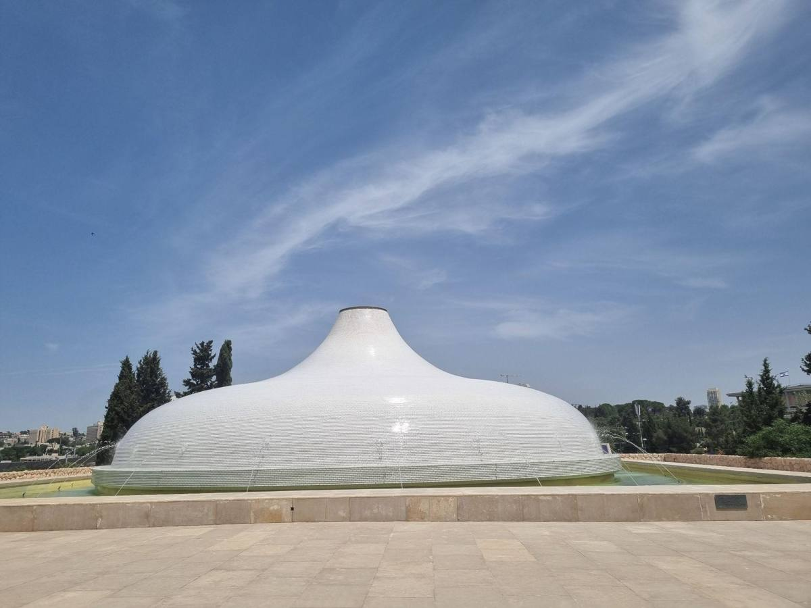
גבעת רםמוזיאון ישראל
המוזיאון הלאומי. בהיכל הספר מוצגות מגילות קומראן, ובחוץ דגם ירושלים בימי בית שני.
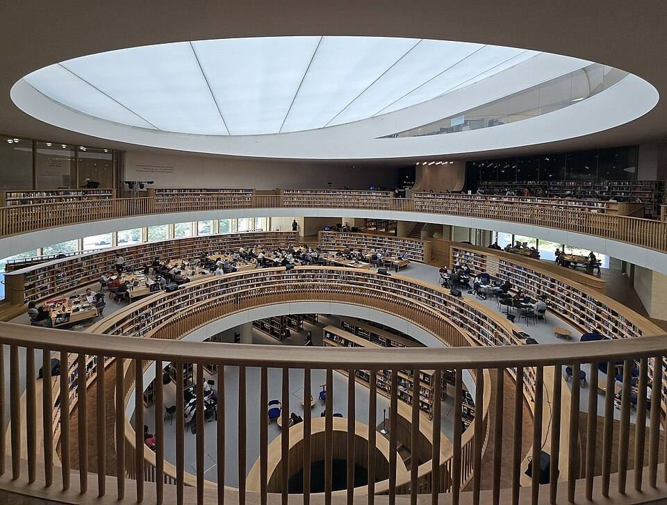
גבעת רםהספרייה הלאומית
אוצרות הדפוס של המדינה ושל העם היהודי, בבניין חדש שאפשר לסייר בו.
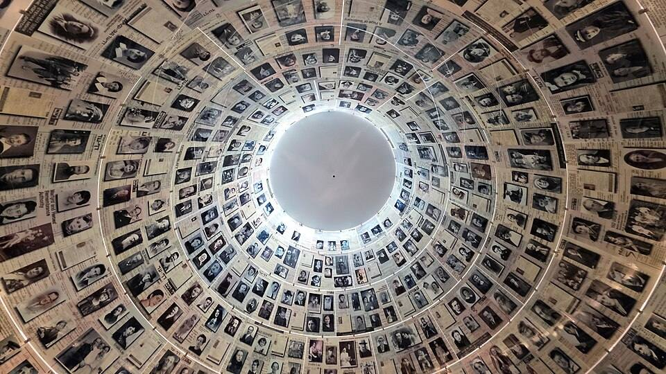
הר הזיכרוןיד ושם
מוזיאון השואה. כל אורח רשמי של המדינה מבקר בו.
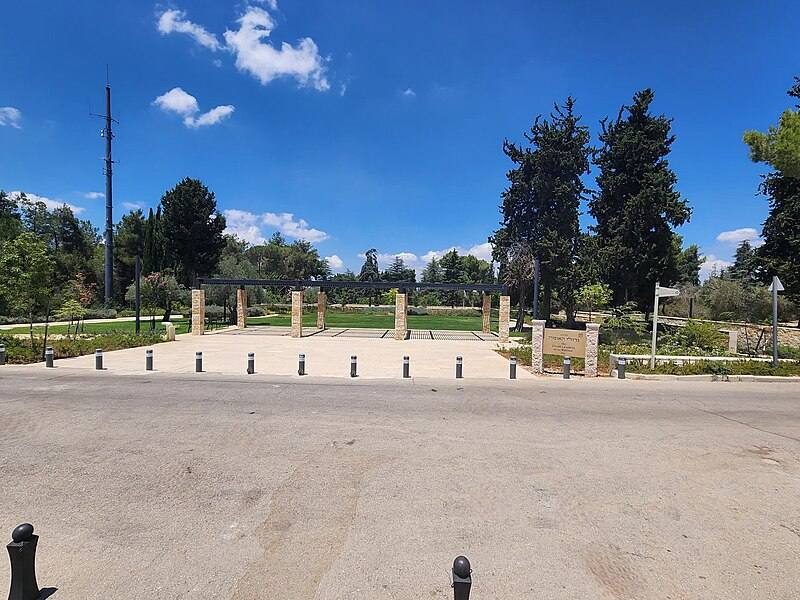
830 מ׳הר הרצל
בית הקברות הלאומי: קבר הרצל וגדולי האומה, ומאז 2017 היכל הזיכרון לחללי מערכות ישראל.
למה יד ושם נכלל בכל ביקור ממלכתי
לפי המחוון של בגרות 2026: הביקור מכיר למבקרים את ההיסטוריה היהודית ואת השמדת העם היהודי בשואה, ובמקביל את המדינה המשגשגת שנבנתה אחריה. הוא יוצר הזדהות עם ישראל כביתו של העם היהודי.
התמונות: מצגת התמונות הרשמית. התיאורים מסוכמים מהמחוונים הרשמיים של 2026.
תיירות עירונית ופנאי
ירושלים של ערב
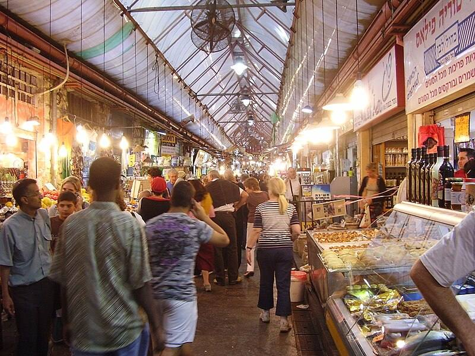
שוק מחנה יהודה
שוק אוכל תוסס ביום, ובערב מסעדות, ברים ואומנות רחוב.
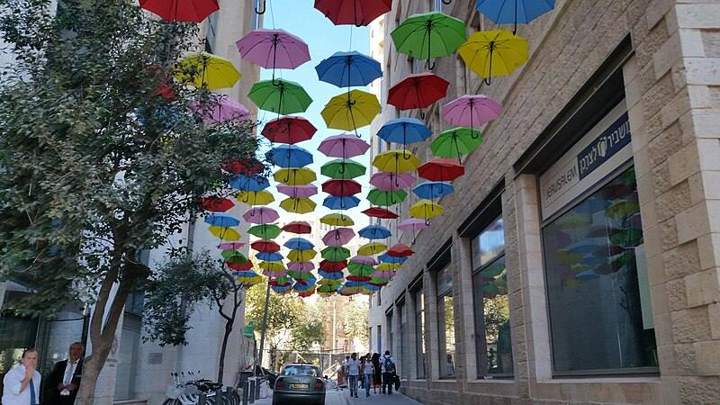
נחלת שבעה
השכונה השלישית שנבנתה מחוץ לחומות. שופצה והפכה למוקד בילוי לילי.
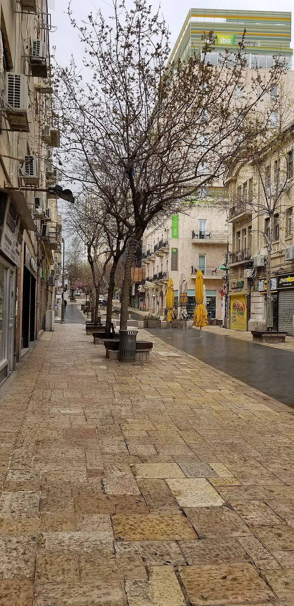
מדרחוב בן יהודה
טיילת במרכז העיר עם מסעדות, בתי קפה וחנויות.
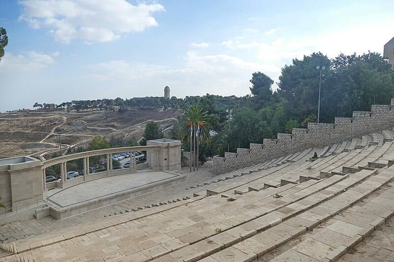
תצפיות
הר הצופים, הר הזיתים וטיילת ארמון הנציב משקיפים על העיר העתיקה ועל מדבר יהודה.
שאלה שחוזרת בבגרות (2024, 2026): אתר מוזיאון, אתר לבילוי לילי, אתר לילדים קטנים, ואתר שהוא סמל שלטון. לילדים קטנים מתקבלים גן החיות התנ״כי, מוזיאון המדע ואקווריום ישראל.
טיילת החומות · מצגת התמונות הרשמית
גורמים המשפיעים על התיירות
מה מעלה ומה מוריד את התיירות לירושלים
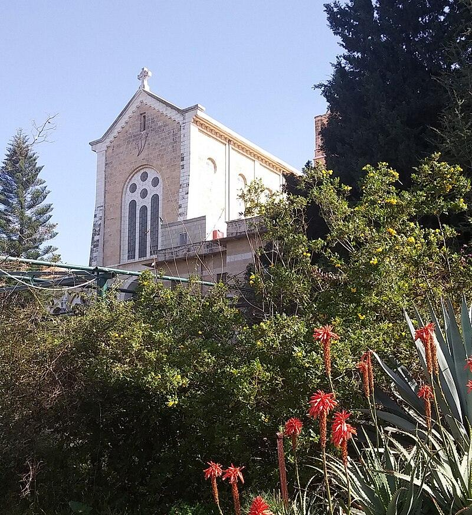
גישה ולינה
איך מגיעים, ואיפה לנים
- הדרך ההיסטורית: צליינים ירדו מהספינה בנמל יפו ועלו לירושלים דרך לטרון ואבו גוש. לכן לאורך הדרך יש מנזרים וכנסיות שאירחו אותם.
- היום: כביש 1, כביש 443, רכבת מהירה מתל אביב ומנתב״ג, ורכבת קלה בתוך העיר.הרחבה
- לינה: מלונות בכל הרמות, אכסניות לעולי רגל (הוספיס), ואירוח כפרי בקיבוצים בהרים. בבית לחם יש מלונות לצליינים.
הרחבה
מלון המלך דוד: מלון פאר מימי המנדט, והיום בית ההארחה הרשמי של המדינה לאורחים חשובים.
קבוצה או עצמאי: קבוצות צליינים (GROUP, מושג 26) לנות בדרך כלל במלונות גדולים ומגיעות באוטובוס. תיירים עצמאיים (F.I.T, מושג 25) בוחרים לרוב מלון בוטיק או דירה, ומסתובבים ברגל וברכבת הקלה.
אתגרים
מה הבעיות של ירושלים כיעד?
בדוח שפרסם ב־2019 מצא מבקר המדינה כמה בעיות שחוזרות על עצמן:
- אין גוף אחד שמרכז את התיירות בעיר.
- מידע תיירותי לא מעודכן, ושלטים חסרים או בשפה אחת.
- לכלוך ותחזוקה ירודה באזורים עמוסי תיירים, כמו שער שכם.
- מחסור בשירותים ציבוריים תקינים בעיר העתיקה.
מקור: דוח מבקר המדינה על ירושלים (2019), פרק התיירות.
קהלים
מי מגיע לירושלים, ומה הוא מחפש
מיומנות בגרות
איך עונים על שאלת תכנון מסלול
- קראו מי הקהל ומה מטרתו. צליינים, משפחה, קבוצה בנושא אחד.
- בחרו אתרים שמתאימים לקהל, לא סתם אתרים מפורסמים.
- סדרו לפי קרבה: אזור אחד בכל חצי יום, בלי לקפוץ הלוך וחזור.
- קבעו משך שהייה ריאלי בכל אתר, שעה עד שלוש שעות.
- נמקו כל בחירה במשפט אחד. הנימוק שווה נקודות.
בגרות 2019: משפחה יהודית מחו״ל חוגגת בר מצווה בכותל ורוצה להכיר את ההיסטוריה של העם היהודי. תכננו סיור של יומיים עם חמישה אתרים.
| יום | אתר | זמן | למה |
|---|---|---|---|
| יום 1 | הכותל המערבי | שעתיים | טקס הבר מצווה, מטרת הביקור |
| מנהרות הכותל | שעה וחצי | ממשיכים מתחת לאדמה מאותה רחבה | |
| הקרדו והבית השרוף | שעתיים | הרובע היהודי, הליכה קצרה מהכותל | |
| יום 2 | עיר דוד ונקבת חזקיהו | 3 שעות | ירושלים של דוד וימי בית ראשון |
| מגדל דוד | שעתיים | מוזיאון תולדות ירושלים, ליד שער יפו |
פתרון לדוגמה. את האתרים עצמם נלמד בנושאים הבאים.
עצירה לתרגול · עונים בסטודיו
תרגול: שאלות 7–9
מושגים לבגרות
מושגים מהנושא
המספרים לפי רשימת המושגים של משרד החינוך (2024). "מטרופולין" ו"שמורת טבע" מופיעים בשיעור הפורטל ואינם ברשימה.
עצירה לתרגול · עונים בסטודיו
תרגול: שאלות 10–11
שאלת סגירה · עונים בסטודיו
שאלה 12: ענו על 2 מתוך 3 הסעיפים
כמו בבחינה: כל סעיף שווה 8.5 נקודות, וכל השאלה 17.
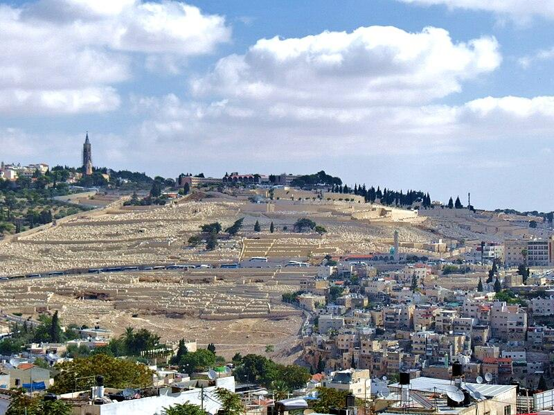
הר הזיתים · מצגת התמונות הרשמיתסיכום
מה לוקחים מהפתיחה
- החבל יושב על הרי יהודה, בין השפלה במערב למדבר יהודה במזרח. ממזרח לעיר יש מדבר, כי הוא בצל הגשם של ההר.
- הר הבית קדוש ליהדות ולאסלאם, ובעיר מתרחשים האירועים המרכזיים בחיי ישו. לכל זרם נוצרי האתרים שלו.
- בית לחם וחברון משלימות את ירושלים: מולד ישו, קבר רחל ומערת המכפלה.
- כ־3 מכל 4 תיירים לישראל מבקרים בירושלים, ולכן מלחמה, אזהרות מסע ועונות משפיעים עליה במיוחד.
- בתכנון מסלול: קהל, אתרים מתאימים, סדר לפי קרבה, זמן ונימוק.
בנושא הבא: סרגל הזמן של ירושלים, מהעיר היבוסית ועד 1967.